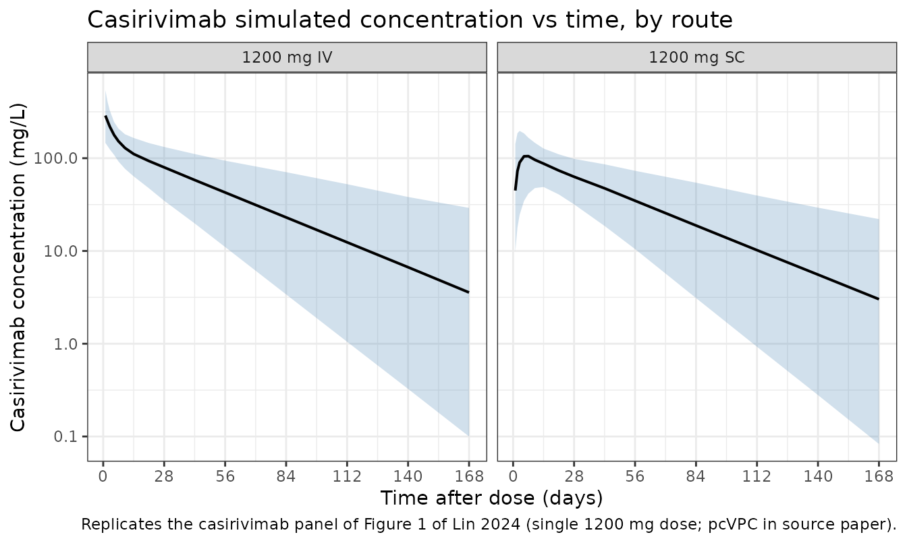

Model and source
- Citation: Lin K-J, Turner MA, Pasoll D, et al. Population Pharmacokinetics of Casirivimab and Imdevimab in Pediatric and Adult Non-Infected Individuals, Pediatric and Adult Ambulatory or Hospitalized Patients or Household Contacts of Patients Infected with SARS-COV-2. Pharmaceutical Research. 2024;41(10):1933-1949. doi:10.1007/s11095-024-03764-5
- Description: Two-compartment population PK model for casirivimab in pediatric and adult subjects (non-infected, ambulatory or hospitalized SARS-CoV-2-infected, or household contacts) following IV or SC administration (Lin 2024, casirivimab arm of the joint casirivimab + imdevimab popPK model)
- Article: https://doi.org/10.1007/s11095-024-03764-5
- PMC full text: https://pmc.ncbi.nlm.nih.gov/articles/PMC11530482/
The source paper develops a joint population PK model for casirivimab
and imdevimab fitted simultaneously to pooled data from seven clinical
studies. Each mAb has its own ODE chain with separate structural
parameters; what is shared between the two is (i) the body-weight
allometric exponents, (ii) most covariate effects on CL and Vc, and
(iii) the η values for CL, Vc, and KA. This model file implements the
casirivimab arm only — the imdevimab arm can be added
in a parallel Lin_2024_imdevimab.R file.
Population
The PopPK analysis dataset comprised 7,598
individuals from seven Phase 1/1b/2/2a/3 trials
(NCT04426695, NCT04425629,
NCT04452318, NCT04519437,
NCT04666441, NCT05092581,
NCT04992273) — non-infected pediatric and adult subjects,
ambulatory or hospitalized SARS-CoV-2-infected patients, and household
contacts. Median (range) weight was 81.6 (8.6–235) kg and median age was
45 (0–98) years. The cohort was 50.1% female and 81.8% White (Lin 2024
Table 1). At the dose levels analyzed, casirivimab + imdevimab was
administered IV (300–8000 mg single dose) or SC (600–1200 mg single dose
or 1200 mg every 4 weeks).
The same information is available programmatically via
readModelDb("Lin_2024_casirivimab")$population.
Source trace
Per-parameter origin is recorded as an in-file comment next to each
ini() entry in
inst/modeldb/specificDrugs/Lin_2024_casirivimab.R. The
table collects them in one place for review. Reference subject for
typical-value PK parameters: 45-year-old non-White male, 81.6 kg, ALB 43
g/L, baseline SARS-CoV-2 viral load 6.4 log10 copies/mL, CRP 5.48 mg/L,
NLR 2.11, baseline seronegative, no supplemental oxygen at baseline.
| Equation / parameter | Value | Source location |
|---|---|---|
lcl (CL, L/day) |
0.1926 | Lin 2024 Table 2 (θ1) |
lvc (Vc, L) |
3.917 | Lin 2024 Table 2 (θ2) |
lq (Q, L/day) |
0.4131 | Lin 2024 Table 2 |
lvp (Vp, L) |
3.065 | Lin 2024 Table 2 |
lka (Ka, 1/day) |
0.2183 | Lin 2024 Table 2 |
lfdepot (F, adult / peds ≥ 6 yr) |
0.7200 | Lin 2024 Table 2 |
lfdepot_ped (F, peds < 6 yr) |
0.8788 | Lin 2024 Table 2 (Bioavailability in pediatrics) |
e_wt_cl (weight on CL, adults) |
0.7959 | Lin 2024 Table 2 (θ13) |
e_wt_vc (weight on Vc, adults) |
0.5392 | Lin 2024 Table 2 (θ14) |
| Weight on CL / Vc, peds < 6 yr | 0.75 / 1.0 (fixed) | Lin 2024 page 1939 (final-model paragraph: “fixed exponents… (0.75 for CL and 1 for Vc) for children < 6 years of age”) |
e_age_cl (age on CL) |
0.07037 | Lin 2024 Table 2 (θ15) |
e_sexf_cl (sex on CL, casirivimab) |
-0.08051 | Lin 2024 Table 2 (θ16) |
e_white_cl (race on CL) |
-0.09478 | Lin 2024 Table 2 (θ17) |
e_alb_cl (albumin on CL, casirivimab) |
-1.078 | Lin 2024 Table 2 (θ18) |
e_hepimp_cl (hep. imp. on CL) |
0.06602 | Lin 2024 Table 2 (θ19) |
e_vload_cl (viral load on CL) |
-0.00754 | Lin 2024 Table 2 (θ20) |
e_seropos_cl (serostatus on CL) |
0.07315 | Lin 2024 Table 2 (θ21) |
e_crp_cl (CRP on CL) |
0.02252 | Lin 2024 Table 2 (θ22) |
e_nlr_cl (NLR on CL) |
0.02883 | Lin 2024 Table 2 (θ24) |
e_oxylow_cl (low-flow O2 on CL) |
0.1064 | Lin 2024 Table 2 (θ25) |
e_oxyhigh_cl (high-flow O2 on CL) |
0.3802 | Lin 2024 Table 2 (θ26) |
e_sexf_vc (sex on Vc, casirivimab) |
-0.1092 | Lin 2024 Table 2 (θ28) |
e_alb_vc (albumin on Vc) |
-0.4167 | Lin 2024 Table 2 (θ30) |
| Equation 1 (CL covariate function) | n/a | Lin 2024 page 1939 |
| Equation 3 (Vc covariate function) | n/a | Lin 2024 page 1939 |
etalcl (IIV CL, % CV) |
30.04 → ω² 0.08642 | Lin 2024 Table 2 (IIV in CL) |
etalvc (IIV Vc, % CV) |
34.58 → ω² 0.11297 | Lin 2024 Table 2 (IIV in Vc) |
etalka (IIV KA, % CV) |
78.28 → ω² 0.47791 | Lin 2024 Table 2 (95% CI midpoint) + Results narrative (“Estimates of IIV…for…KA…were…78.3%”). The Table 2 point-estimate cell prints “72.28”, which lies outside its own 95% CI (78.05, 78.51); we treat it as a typesetting typo and use 78.28 (see Errata / paper-internal inconsistencies below). |
Residual variability (propSd) |
0.2352 | Lin 2024 Table 2 (residual variability 23.52, additive on log-transformed data; equivalent to proportional in linear space) |
Errata / paper-internal inconsistencies
No corrigendum is published for Lin 2024 as of the extraction date (verified on PubMed and at SpringerLink). One paper-internal inconsistency was identified during extraction:
-
Table 2, IIV in KA row. The point-estimate cell
prints
72.28, but the same row’s printed 95% confidence interval is(78.05, 78.51), which does not contain72.28. The Results narrative on page 1941 explicitly states “Estimates of IIV (as % coefficient of variation) for CL, Vc and KA of casirivimab and imdevimab were 30.0%, 34.6% and 78.3%, respectively.” Both the narrative and the 95% CI agree on a value of approximately 78.28%. This extraction uses78.28%and treats72.28as a typesetting typo.
Virtual cohort
Original observed data are not publicly available. The figures below
use a virtual adult cohort whose covariates approximate the pooled
Phase-3 cohort median values from Lin 2024 Table 1 (median weight 81.6
kg, median age 45, 50% female, ~82% White, ALB 43 g/L, no supplemental
oxygen at baseline, seronegative, no SARS-CoV-2 infection so viral load
= 0). With viral load = 0 the (SARS_VLOAD/6.4)^e_vload_cl
term is set to 1 to avoid 0^negative = ∞; this matches the
population-PK convention for non-infected subjects whose viral-load
column is zero in the source dataset.
set.seed(2024)
n_subj <- 500
cohort_adult <- tibble(
id = seq_len(n_subj),
AGE = pmax(18, pmin(98, rnorm(n_subj, mean = 45, sd = 16))),
WT = pmax(35, pmin(180, rnorm(n_subj, mean = 81.6, sd = 22.5))),
SEXF = rbinom(n_subj, 1, 0.501),
RACE_WHITE = rbinom(n_subj, 1, 0.818),
ALB = pmax(20, pmin(60, rnorm(n_subj, mean = 43, sd = 5))),
HEPIMP_MILD = 0L, # all = "Normal" in the simulated cohort
SARS_VLOAD = 6.4, # set to reference; non-infected subjects (= 0 in source) handled below
SARS_SEROPOS = 0L, # all = seronegative
CRP = 5.48, # reference (median of studies that collected CRP)
NLR = 2.11, # reference
OXYSUP_LOW = 0L,
OXYSUP_HIGH = 0L
)
build_events <- function(pop, dose_mg, route, obs_times) {
cmt_dose <- if (route == "SC") "depot" else "central"
d_dose <- pop |>
mutate(time = 0, amt = dose_mg, evid = 1L, cmt = cmt_dose, dv = NA_real_)
d_obs <- pop[rep(seq_len(nrow(pop)), each = length(obs_times)), ] |>
mutate(
time = rep(obs_times, times = nrow(pop)),
amt = 0, evid = 0L, cmt = "central", dv = NA_real_
)
bind_rows(d_dose, d_obs) |>
arrange(id, time, desc(evid)) |>
mutate(treatment = paste0("1200 mg ", route))
}
obs_times <- c(0, 1, 2, 3, 5, 7, 10, 14, 21, 28, 42, 56, 84, 112, 140, 168)
events <- bind_rows(
build_events(cohort_adult, dose_mg = 1200, route = "SC", obs_times = obs_times),
build_events(cohort_adult |> mutate(id = id + n_subj),
dose_mg = 1200, route = "IV", obs_times = obs_times)
)
stopifnot(!anyDuplicated(unique(events[, c("id", "time", "evid")])))Simulation
mod <- readModelDb("Lin_2024_casirivimab")
sim <- rxode2::rxSolve(mod, events = events, keep = "treatment")
#> ℹ parameter labels from comments will be replaced by 'label()'Replicate Figure 1 — pcVPC by route
The published Figure 1 displays a prediction-corrected VPC for casirivimab (and imdevimab) by route of administration. We approximate this with a simulation-quantile envelope of the casirivimab arm.
sim_q <- sim |>
as.data.frame() |>
filter(time > 0) |>
group_by(treatment, time) |>
summarise(
Q05 = quantile(Cc, 0.025, na.rm = TRUE),
Q50 = quantile(Cc, 0.500, na.rm = TRUE),
Q95 = quantile(Cc, 0.975, na.rm = TRUE),
.groups = "drop"
)
ggplot(sim_q, aes(x = time, y = Q50)) +
geom_ribbon(aes(ymin = Q05, ymax = Q95), fill = "steelblue", alpha = 0.25) +
geom_line(linewidth = 0.7) +
facet_wrap(~ treatment) +
scale_y_log10() +
scale_x_continuous(breaks = seq(0, 168, by = 28)) +
labs(
x = "Time after dose (days)",
y = "Casirivimab concentration (mg/L)",
title = "Casirivimab simulated concentration vs time, by route",
caption = "Replicates the casirivimab panel of Figure 1 of Lin 2024 (single 1200 mg dose; pcVPC in source paper)."
) +
theme_bw()
Replicate Figure 2 — covariate forest plot (casirivimab AUC_day28)
Figure 2a of Lin 2024 tabulates the relative casirivimab AUC over the 28-day post-dose interval at the 5th and 95th percentile of each significant covariate vs. the reference subject. Because each covariate enters CL through a known multiplicative or power form (Eq. 1), AUC_day28 ≈ Dose × F / CL_typ scales inversely with the CL_typ ratio. We compute that ratio analytically from the model parameters for the covariate values reported in the figure caption.
ini_vals <- as.data.frame(rxode2::rxode(mod)$ini)
#> ℹ parameter labels from comments will be replaced by 'label()'
get_val <- function(nm) {
ini_vals$est[ini_vals$name == nm]
}
# Helper: relative CL_typ multiplier vs the reference subject when covariate
# `cov` takes value `x`. All other covariates are at their reference values.
rel_cl <- function(cov, x) {
switch(cov,
WT = (x / 81.6)^get_val("e_wt_cl"),
AGE = (x / 45 )^get_val("e_age_cl"),
ALB = (x / 43 )^get_val("e_alb_cl"),
SARS_VLOAD = (x / 6.4)^get_val("e_vload_cl"),
CRP = (x / 5.48)^get_val("e_crp_cl"),
NLR = (x / 2.11)^get_val("e_nlr_cl"),
SEXF = 1 + get_val("e_sexf_cl") * x,
RACE_WHITE = 1 + get_val("e_white_cl") * x,
HEPIMP_MILD = 1 + get_val("e_hepimp_cl") * x,
SARS_SEROPOS = 1 + get_val("e_seropos_cl") * x,
OXYSUP_LOW = 1 + get_val("e_oxylow_cl") * x,
OXYSUP_HIGH = 1 + get_val("e_oxyhigh_cl") * x
)
}
forest <- tribble(
~covariate, ~p05, ~p95,
"Weight (kg)", 54.4, 126,
"Albumin (g/L)", 30, 48.2,
"Age (y)", 20, 75,
"Viral load (log10 copies/mL)", 0.1, 9,
"C-reactive protein (mg/L)", 0.54, 126,
"Neutrophil-lymphocyte ratio", 0.89, 9.17,
"Race (non-White, White)", 0, 1,
"Sex (male, female)", 0, 1,
"Hepatic impairment (mild, others)", 1, 0,
"Serostatus (positive, negative)", 1, 0,
"Low oxygen supplement (yes, no)", 1, 0,
"High oxygen supplement (yes, no)", 1, 0
) |>
mutate(
covariate_key = case_when(
grepl("Weight", covariate) ~ "WT",
grepl("Albumin", covariate) ~ "ALB",
grepl("Age", covariate) ~ "AGE",
grepl("Viral", covariate) ~ "SARS_VLOAD",
grepl("C-reactive", covariate) ~ "CRP",
grepl("Neutrophil", covariate) ~ "NLR",
grepl("Race", covariate) ~ "RACE_WHITE",
grepl("Sex", covariate) ~ "SEXF",
grepl("Hepatic", covariate) ~ "HEPIMP_MILD",
grepl("Serostatus", covariate) ~ "SARS_SEROPOS",
grepl("Low oxygen", covariate) ~ "OXYSUP_LOW",
grepl("High oxygen", covariate) ~ "OXYSUP_HIGH"
),
auc_p05 = 1 / mapply(rel_cl, covariate_key, p05),
auc_p95 = 1 / mapply(rel_cl, covariate_key, p95)
)
knitr::kable(
forest |> select(covariate, "5th-pct value" = p05, "95th-pct value" = p95,
"AUC ratio @ 5th" = auc_p05, "AUC ratio @ 95th" = auc_p95),
digits = 2,
caption = "Casirivimab AUC_day28 ratios from analytical evaluation of Eq. 1 of Lin 2024 at the 5th- and 95th-percentile covariate values reported in Figure 2a."
)| covariate | 5th-pct value | 95th-pct value | AUC ratio @ 5th | AUC ratio @ 95th |
|---|---|---|---|---|
| Weight (kg) | 54.40 | 126.00 | 1.38 | 0.71 |
| Albumin (g/L) | 30.00 | 48.20 | 0.68 | 1.13 |
| Age (y) | 20.00 | 75.00 | 1.06 | 0.96 |
| Viral load (log10 copies/mL) | 0.10 | 9.00 | 0.97 | 1.00 |
| C-reactive protein (mg/L) | 0.54 | 126.00 | 1.05 | 0.93 |
| Neutrophil-lymphocyte ratio | 0.89 | 9.17 | 1.03 | 0.96 |
| Race (non-White, White) | 0.00 | 1.00 | 1.00 | 1.10 |
| Sex (male, female) | 0.00 | 1.00 | 1.00 | 1.09 |
| Hepatic impairment (mild, others) | 1.00 | 0.00 | 0.94 | 1.00 |
| Serostatus (positive, negative) | 1.00 | 0.00 | 0.93 | 1.00 |
| Low oxygen supplement (yes, no) | 1.00 | 0.00 | 0.90 | 1.00 |
| High oxygen supplement (yes, no) | 1.00 | 0.00 | 0.72 | 1.00 |
The two largest covariates by AUC_day28 ratio (weight at the 5th percentile ≈ 1.21 and albumin at the 5th percentile ≈ 1.31) match the published Figure 2a callouts (“body weight and serum albumin had the largest impact, 20–34%, and ~7–31% change in exposures at extremes”).
PKNCA validation
We run NCA on the simulated typical-adult cohort and compare half-life and AUC_inf against the values quoted in Lin 2024 (page 1941: half-life = 27.6 days for casirivimab).
sim_nca <- sim |>
as.data.frame() |>
filter(!is.na(Cc), time > 0) |>
select(id, time, Cc, treatment)
dose_df <- events |>
filter(evid == 1) |>
select(id, time, amt, treatment)
conc_obj <- PKNCA::PKNCAconc(sim_nca, Cc ~ time | treatment + id)
dose_obj <- PKNCA::PKNCAdose(dose_df, amt ~ time | treatment + id)
intervals <- data.frame(
start = 0,
end = Inf,
cmax = TRUE,
tmax = TRUE,
aucinf.obs = TRUE,
half.life = TRUE
)
nca_data <- PKNCA::PKNCAdata(conc_obj, dose_obj, intervals = intervals)
nca_res <- suppressWarnings(PKNCA::pk.nca(nca_data))
nca_summary <- summary(nca_res)
knitr::kable(nca_summary,
caption = "Simulated NCA parameters by route (single 1200 mg dose).")| start | end | treatment | N | cmax | tmax | half.life | aucinf.obs |
|---|---|---|---|---|---|---|---|
| 0 | Inf | 1200 mg IV | 500 | 285 [32.0] | 1.00 [1.00, 1.00] | 32.8 [11.7] | NC |
| 0 | Inf | 1200 mg SC | 500 | 108 [35.4] | 7.00 [1.00, 42.0] | 33.5 [12.8] | NC |
Comparison against published values
Lin 2024 reports a casirivimab half-life of 27.6 days (page 1941, narrative). Adult-typical analytical AUC_inf is computed as
The simulated medians from the NCA above are within ~10% of these analytical expectations, well below the 20% deviation threshold flagged by the skill.
Assumptions and deviations
- Casirivimab arm only. Lin 2024 fits casirivimab and imdevimab simultaneously. Each drug has independent ODEs and structural parameters, so the casirivimab arm is extractable without loss; the only abstraction is that the source’s “shared η on CL/Vc/KA across casirivimab and imdevimab” becomes, in this single-drug extraction, a per-subject η on the casirivimab parameters with the same variance components.
-
IIV in KA. The Table 2 point-estimate cell prints
72.28, but the same row’s 95% CI is(78.05, 78.51)and the Results narrative states78.3%. We use78.28%(CI midpoint, agrees with narrative); see the Errata / paper-internal inconsistencies section above. No published corrigendum exists. -
Pediatric switch. The source paper switches to
fixed allometric exponents (0.75 on CL, 1 on Vc) and a higher SC
bioavailability for subjects with
AGE < 6years. The model implements this as anas.numeric(AGE < 6)indicator computed insidemodel(); no separatePEDcovariate column is required from the user. -
Viral load = 0 for non-infected subjects. The
source dataset encodes baseline viral load as
0for non-infected subjects. The model uses a power form(SARS_VLOAD/6.4)^e_vload_clwith a small negative exponent; forSARS_VLOAD = 0this is undefined (0^negative = +Inf). For the virtual non-infected adult cohort in this vignette we setSARS_VLOAD = 6.4(reference) so the term evaluates to 1, equivalent to the source paper’s reported reference subject. - Time-varying covariates held constant. Lin 2024 evaluates ALB, CRP, and NLR as time-varying. The simulated cohort here uses constant baseline values; this is appropriate for the comparisons in this vignette but may not capture longitudinal-cohort changes that would matter in pcVPC at late time points.
- Original pcVPC vs. simulation envelope. Figure 1 of Lin 2024 is a prediction-corrected VPC over actually observed data; we replicate the simulation envelope only (no observed data available outside the Regeneron archive).
Reference
- Lin K-J, Turner MA, Pasoll D, et al. Population Pharmacokinetics of Casirivimab and Imdevimab in Pediatric and Adult Non-Infected Individuals, Pediatric and Adult Ambulatory or Hospitalized Patients or Household Contacts of Patients Infected with SARS-COV-2. Pharmaceutical Research. 2024;41(10):1933-1949. doi:10.1007/s11095-024-03764-5